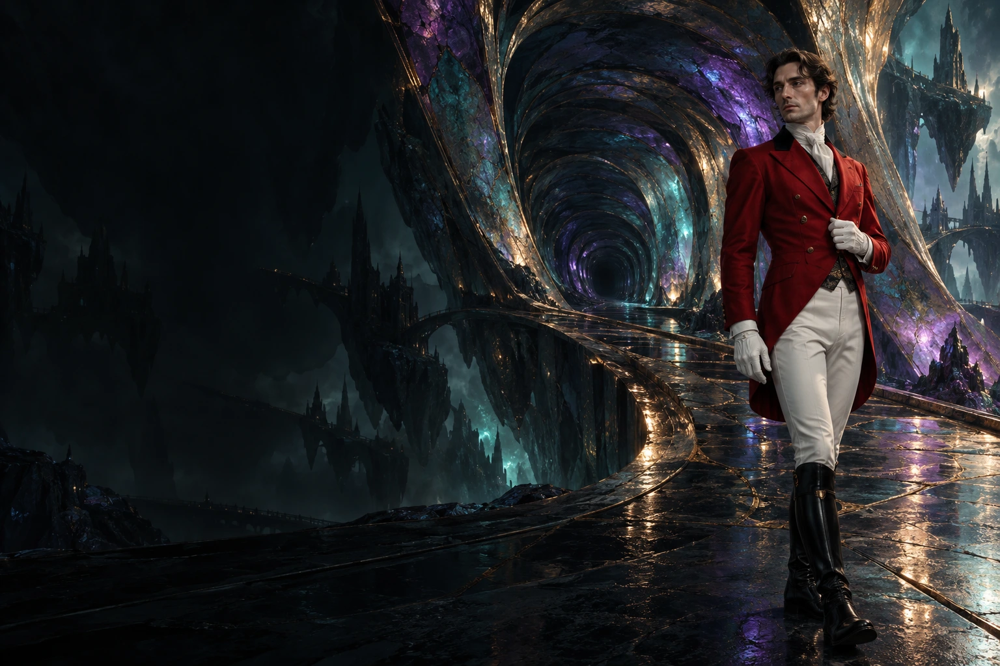

ФАНТАСТИЧЕСКАЯ ПОВЕСТЬ
Москваиная.
Линия судьбы
У каждого города есть тайная сторона.
У каждой встречи — своя линия судьбы.
КришенкаВАШ ПРОВОДНИК МЕЖДУ МИРАМИ
Одна улица. Один шаг.
И привычный мир останется позади.
I / ГОРОД СО СВОИМИ ПРАВИЛАМИ
Знакомый город.
Иная реальность.
Здесь магия стала частью повседневности. Джины чинят электроприборы, на заклинания выдают лицензии, а за порядком следит «Транквилизация».
Но кто следит за теми, кто следит за всеми?
ᚱ
ᚨ
II / УЛИКА, КОТОРАЯ ПОМНИТ
На лезвии —
чья-то судьба.
Древний кинжал. Извилистая линия на клинке. Заклятье, которое знает свою жертву.
Один удар становится началом истории,
ведущей далеко за пределы Москвы.
III / ПО ТУ СТОРОНУ ПОРТАЛА
Здесь даже камень
умеет меняться.
В гладком мраморе отражается чужое присутствие. Из мерцания проступает Бомбо — голем, вернувшийся из подземелий.

IV / ТАМ, ГДЕ КОНЧАЮТСЯ КАРТЫ
Между одним миром
и следующим.
Раста Петрович идёт по следу. Алый смокинг, белые перчатки — и переход, в котором само пространство меняет правила.
Куда приведёт та, которую выберешь ты?
V / НИ ОДНА ВСТРЕЧА НЕ СЛУЧАЙНА
Разные миры.
Одна линия.
Юная ведьма Кришенка. Дамплиер Ньюп. Медведь-ядровёрт Пузырь. Следователь Раста Петрович.
Их пути переплетаются там, где магия,
тайна и ирония становятся одной историей.
Художественное погружение в мир повести